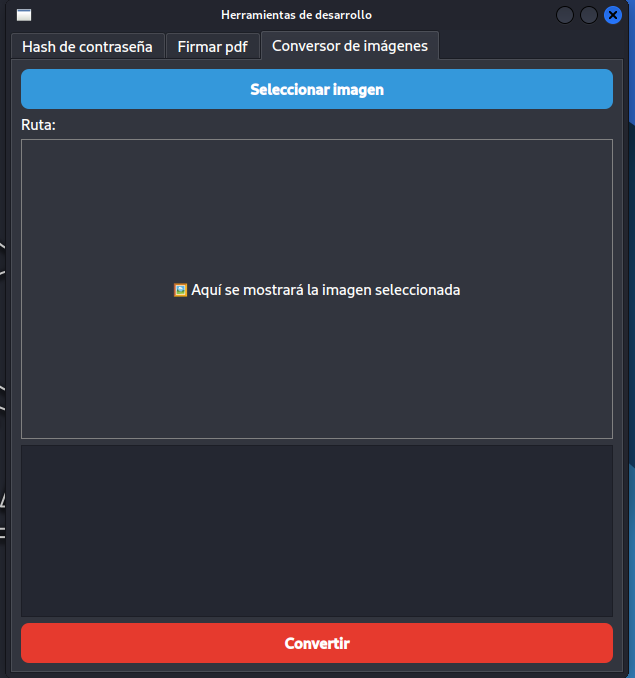
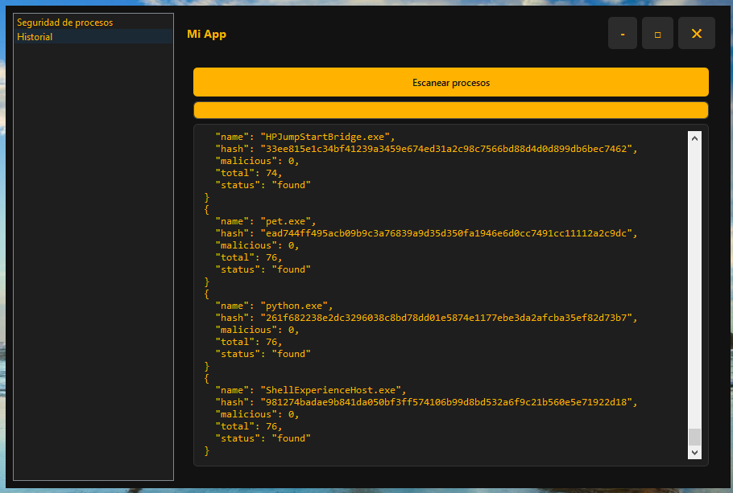

Bienvenido a mi pequeño rincón en la web
Desarrollador web apasionado por crear experiencias digitales modernas y funcionales.
Proyectos Destacados

Proyecto Uno
Esta es una herramienta creada en python para automatizar y simplificar procesos comunes en desarrollo, como convertir imágenes (a webp).

Proyecto Dos
Esta otra herramienta, desarrollada en Python, sirve para realizar auditorías de seguridad de un equipo windows. Aún está en desarrollo, pero es muy útil.
Proyecto Tres
Descripción breve del proyecto. Tecnologías utilizadas y objetivos alcanzados.
Sobre mí
Soy un desarrollador con experiencia en frontend y backend. Me encanta trabajar con tecnologías modernas como Tailwind CSS, React y Node.js. Siempre estoy aprendiendo y buscando nuevos desafíos.
Contacto
¿Quieres trabajar conmigo o tienes alguna pregunta?